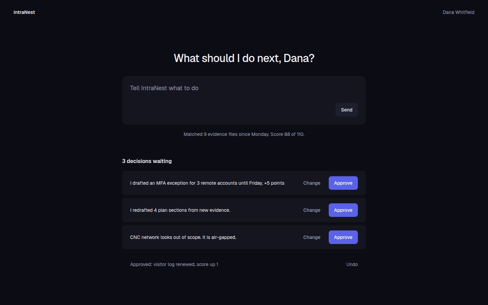
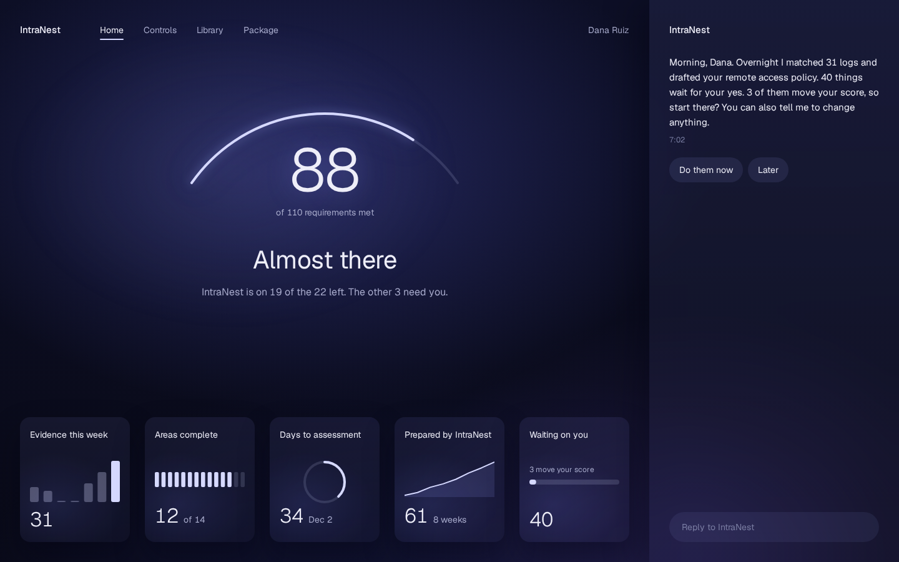
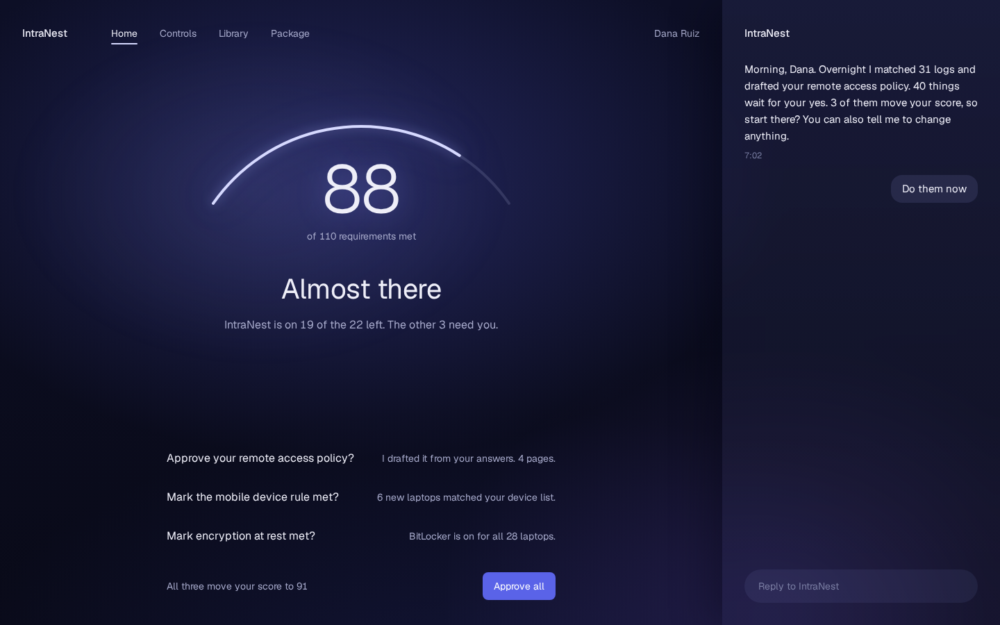
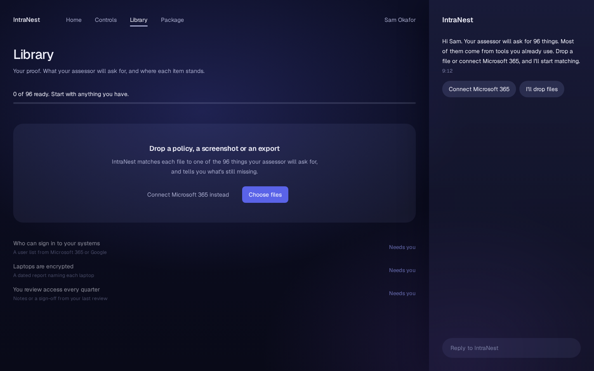
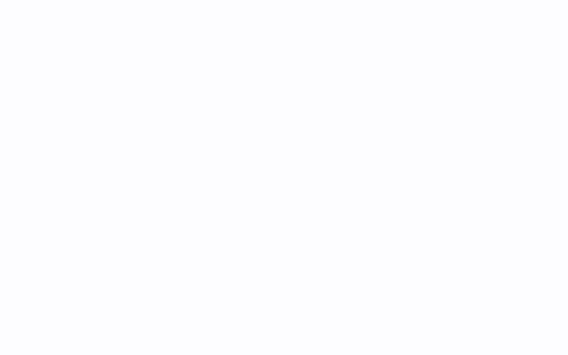
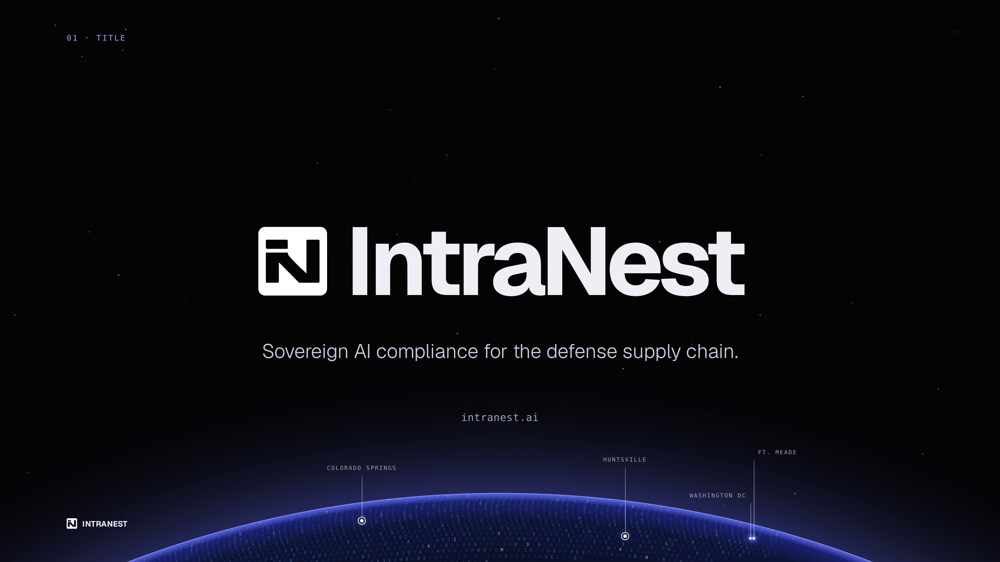
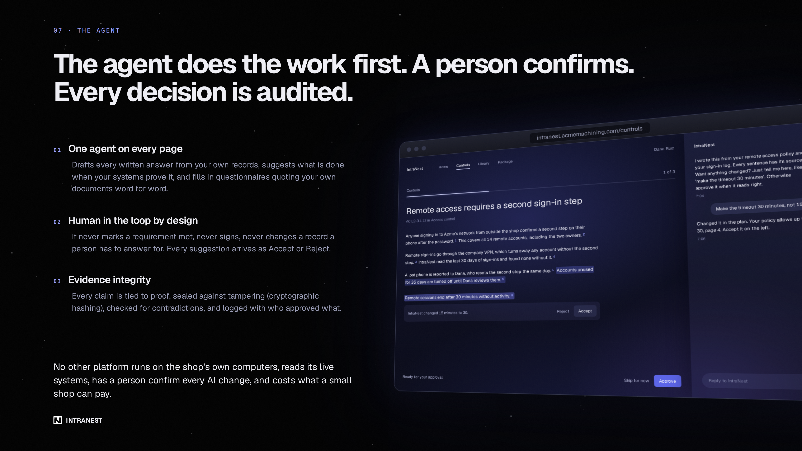

intranest
i'm co-founder & cpo. i designed the indigo ink system and every product surface: 110 requirements, one calm screen.

live product, intranest.ai landing page
i'm co-founder & cpo. i designed the indigo ink system and every product surface: 110 requirements, one calm screen.
live product, intranest.ai landing page
There's a ball bearing shop in Wisconsin with 40 people. It makes parts that end up in things the Department of Defense buys. Lockheed has a security team. The bearing shop does not.
Since CMMC landed in defense contracts, that shop has to prove it meets NIST 800-171: 110 security requirements, each with its own evidence, policies and a written System Security Plan. The DoD's own rule counts about 221,000 companies in this position. Most of them are small. Today they hire a consultant for somewhere between $50k and $150k. If they fail the assessment, the contract is gone.
The people doing this work are usually not security people. In our sample data she's called Dana. She runs operations, she got handed the binder, and she knows almost nothing about CMMC. That was the person I designed for, every screen.
Compliance software usually looks like government software: grey tables, traffic-light badges, forty buttons on one screen. I built the system first. It's called Indigo Ink, and it's binding for everything we make.
status chips · rebuilt from the indigo ink tokens
A reject-on-sight list every screen gets checked against: no strokes around cards, no little dots or icon chips, no two-tone text, no eyebrow labels, no huge buttons.
The landing page's signature is the glyph globe. The land isn't painted, it's typed: the character stream is the 110 requirement IDs strung together, AC311 through SI3147.
the texture is the worklive recreation, canvas · simplified: the id stream wraps the whole sphere, no land mask
The first dashboards were normal dashboards: charts, a score, an ask box tucked in the corner. I rejected them. My ruling was that the full agentic product is the MVP. The agent reads and drafts; a person confirms every decision someone has to answer for.


home v3, directions a and b · design mocks, sample data
Home as a briefing.
Pure chat fails a novice: a blank box asks her to know the question. A pure dashboard fails her too: numbers with no voice. Home went through six rounds to find the middle. v4 was flat and I said so: the agent should send the first message, not wait for one.

home v5 at rest · design mock, sample data
88 + 19 + 3 = 110.
One big number on a soft arc: 88 of 110 met. "Almost there." One sentence: IntraNest is on 19 of the 22 left; the other 3 need you. The arc is drawn at the true ratio, so approving 3 items moves it a small step, because that's what happened. A chart that exaggerates progress is lying to someone about to be audited.

review all, the needs-you stack · design mock, sample data
One filled button for yes.
Every surface uses the same grammar: the agent has done the work, one filled button for the human's yes, and the manual path is a quiet text button, "Do it myself". Needs-you items fold into one place and can be approved together. The agent never marks a requirement met or signs on its own.
i made the manual path a quiet text button, not a hidden one, because taking over has to stay possible without becoming the default.

library, a needs-you row open · design mock, sample data
A library of what the assessor will ask.
Small shops get rejected mostly for undated or cropped screenshots. So the Library isn't a file browser: it's the list of requests, in plain words. A row that needs you opens with one good example beside one "not enough", and one action.
i put a good example beside a "not enough" one because people learn the bar faster from seeing it than from reading a rule.


empty and failure states · design mocks, sample data
Honest when there's nothing, honest when it breaks.
A new org at 0 of 110 lands on a guided first step, not a dead page. Every failure says what's safe, the last good value, and the one thing to do next.

approve motion · recorded from an html mock, sample data
Designing in code.
The design lives in code: mocks are HTML on the real tokens, rendered dark and light, desktop and mobile, with real timings. Approve is a 280ms fold, the arc fills, the score ticks 88 to 89. Each motion shows one fact changing.
The investor deck was the test of whether Indigo Ink was a system or a dashboard skin: twelve slides in the same globe, sky, indigo and Geist. I wrote the laws down as we built it.
"No two-tone or multi-color text anywhere. Text is ONE color; emphasis is carried by WEIGHT."

deck title slide · pitch deck export

deck slide, the agent · pitch deck export
IntraNest is live at intranest.ai: the landing page with the globe, a free SPRS score calculator for all 110 requirements, and the app behind login, with full SSP generation end to end, Microsoft connectors in production, and agent drafting, human-confirmed. The pre-seed raise is in motion.